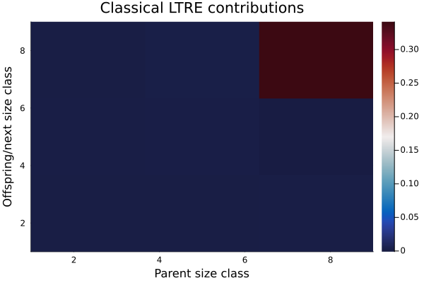
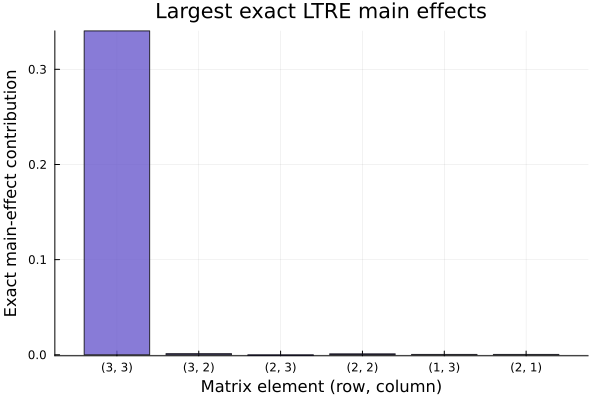

Overview
A life table response experiment (LTRE) decomposes differences in population growth between environments, treatments, or populations into contributions from underlying demographic processes. Here we fit vital rates for a "good year" and a "bad year", construct kernels from those fitted rates, and then compare classical and exact LTRE decompositions.
To keep the exact fANOVA decomposition tractable, we use a deliberately coarse discretization of the size domain.
Setup
using VitalRateModels, DataFrames, StatsModels, Distributions, Plots
using Random
using StructuredPopulationCore: ContinuousDomain, meshpoints, lambda, ltre, exact_ltre
Random.seed!(2032)Random.TaskLocalRNG()Simulating two environments
The good year has higher survival, more growth, and higher fecundity than the bad year.
function simulate_year(n; surv_int, surv_slope, grow_int, grow_slope, grow_sd, fec_int, fec_slope, recruit_mean)
size_t = clamp.(rand(Normal(5.0, 1.3), n), 0.8, 9.5)
surv_prob = @. 1 / (1 + exp(-(surv_int + surv_slope * size_t)))
survived = rand.(Bernoulli.(surv_prob)) .== 1
size_t1 = similar(size_t)
for i in eachindex(size_t)
μ = grow_int + grow_slope * size_t[i]
size_t1[i] = survived[i] ? rand(Normal(μ, grow_sd)) : 0.0
end
size_t1 = clamp.(size_t1, 0.0, 11.0)
fec_mean = @. exp(fec_int + fec_slope * size_t)
fecundity = [survived[i] ? rand(Poisson(fec_mean[i])) : 0 for i in eachindex(size_t)]
repro_idx = findall(>(0), fecundity)
parent_size = size_t[repro_idx]
recruit_size = clamp.(rand.(Normal.(fill(recruit_mean, length(parent_size)), 0.35)), 0.2, 3.0)
demography = DataFrame(size_t=size_t, size_t1=size_t1, survived=survived, fecundity=fecundity)
recruits = DataFrame(size_t=parent_size, recruit_size=recruit_size)
return demography, recruits
end
good_demo, good_recruits = simulate_year(
500;
surv_int=-1.5,
surv_slope=0.52,
grow_int=1.2,
grow_slope=0.90,
grow_sd=0.7,
fec_int=-3.1,
fec_slope=0.36,
recruit_mean=1.3,
)
bad_demo, bad_recruits = simulate_year(
500;
surv_int=-2.6,
surv_slope=0.42,
grow_int=0.7,
grow_slope=0.82,
grow_sd=0.9,
fec_int=-4.0,
fec_slope=0.28,
recruit_mean=1.0,
)(500×4 DataFrame
Row │ size_t size_t1 survived fecundity
│ Float64 Float64 Bool Int64
─────┼───────────────────────────────────────
1 │ 5.6036 4.81241 true 1
2 │ 2.40282 0.0 false 0
3 │ 5.63562 0.0 false 0
4 │ 2.61297 3.65357 true 0
5 │ 3.15462 0.0 false 0
6 │ 3.97653 4.54039 true 0
7 │ 1.79145 0.0 false 0
8 │ 4.66944 2.69135 true 0
⋮ │ ⋮ ⋮ ⋮ ⋮
494 │ 5.76532 5.41706 true 0
495 │ 4.10882 4.05675 true 0
496 │ 5.43653 0.0 false 0
497 │ 4.02793 0.0 false 0
498 │ 7.43669 6.58429 true 0
499 │ 3.59751 3.39284 true 0
500 │ 4.91601 0.0 false 0
485 rows omitted, 12×2 DataFrame
Row │ size_t recruit_size
│ Float64 Float64
─────┼───────────────────────
1 │ 5.6036 0.565309
2 │ 2.60447 1.34511
3 │ 7.31545 0.795551
4 │ 6.96735 1.06936
5 │ 6.46682 1.13333
6 │ 7.67916 0.851462
7 │ 6.60041 1.1125
8 │ 2.47123 1.57148
9 │ 8.85346 0.921885
10 │ 7.46008 1.40184
11 │ 7.063 1.22445
12 │ 4.15512 0.985435)Fitting vital rates for each population
function fit_all_vital_rates(demo, recruits)
survival = fit_vital_rate(SurvivalModel, demo, @formula(survived ~ size_t))
growth = fit_vital_rate(GrowthModel, filter(:survived => identity, demo), @formula(size_t1 ~ size_t))
fecundity = fit_vital_rate(FecundityModel, demo, @formula(fecundity ~ size_t), distribution=Poisson_())
recruitment = fit_vital_rate(RecruitmentModel, recruits, @formula(recruit_size ~ size_t))
return survival, growth, fecundity, recruitment
end
good_surv, good_grow, good_fec, good_rec = fit_all_vital_rates(good_demo, good_recruits)
bad_surv, bad_grow, bad_fec, bad_rec = fit_all_vital_rates(bad_demo, bad_recruits)(FittedSurvival{StatsModels.TableRegressionModel{GLM.GeneralizedLinearModel{GLM.GlmResp{Vector{Float64}, Distributions.Bernoulli{Float64}, GLM.LogitLink}, GLM.DensePredChol{Float64, LinearAlgebra.CholeskyPivoted{Float64, Matrix{Float64}, Vector{Int64}}}}, Matrix{Float64}}}(StatsModels.TableRegressionModel{GLM.GeneralizedLinearModel{GLM.GlmResp{Vector{Float64}, Distributions.Bernoulli{Float64}, GLM.LogitLink}, GLM.DensePredChol{Float64, LinearAlgebra.CholeskyPivoted{Float64, Matrix{Float64}, Vector{Int64}}}}, Matrix{Float64}}(GLM.GeneralizedLinearModel{GLM.GlmResp{Vector{Float64}, Distributions.Bernoulli{Float64}, GLM.LogitLink}, GLM.DensePredChol{Float64, LinearAlgebra.CholeskyPivoted{Float64, Matrix{Float64}, Vector{Int64}}}}:
Coefficients:
────────────────────────────────────────────────────────────────
Coef. Std. Error z Pr(>|z|) Lower 95% Upper 95%
────────────────────────────────────────────────────────────────
x1 -2.31168 0.382964 -6.04 <1e-08 -3.06228 -1.56109
x2 0.389261 0.0739865 5.26 <1e-06 0.244251 0.534272
────────────────────────────────────────────────────────────────
, ModelFrame{@NamedTuple{survived::BitVector, size_t::Vector{Float64}}, GLM.GeneralizedLinearModel}(survived ~ 1 + size_t, StatsModels.Schema with 2 entries:
size_t => size_t
survived => survived
, (survived = Bool[1, 0, 0, 1, 0, 1, 0, 1, 0, 0 … 0, 0, 1, 1, 1, 0, 0, 1, 1, 0], size_t = [5.603602536897485, 2.402824476475838, 5.635619108079974, 2.612965694186391, 3.1546185145108785, 3.976530274050944, 1.7914519991429423, 4.669435145107663, 7.302148513487012, 4.869678980605093 … 2.511326175288091, 6.162445850664751, 3.849493053352365, 5.765318665612073, 4.108824224700153, 5.43652606860414, 4.027927657286944, 7.436689315894175, 3.5975145410579032, 4.916007509580773]), GLM.GeneralizedLinearModel), ModelMatrix{Matrix{Float64}}([1.0 5.603602536897485; 1.0 2.402824476475838; … ; 1.0 3.5975145410579032; 1.0 4.916007509580773], [1, 2])), survived ~ size_t, Binomial_(), 649.1417456364519, 500), FittedGrowth{StatsModels.TableRegressionModel{GLM.GeneralizedLinearModel{GLM.GlmResp{Vector{Float64}, Distributions.Normal{Float64}, GLM.IdentityLink}, GLM.DensePredChol{Float64, LinearAlgebra.CholeskyPivoted{Float64, Matrix{Float64}, Vector{Int64}}}}, Matrix{Float64}}}(StatsModels.TableRegressionModel{GLM.GeneralizedLinearModel{GLM.GlmResp{Vector{Float64}, Distributions.Normal{Float64}, GLM.IdentityLink}, GLM.DensePredChol{Float64, LinearAlgebra.CholeskyPivoted{Float64, Matrix{Float64}, Vector{Int64}}}}, Matrix{Float64}}(GLM.GeneralizedLinearModel{GLM.GlmResp{Vector{Float64}, Distributions.Normal{Float64}, GLM.IdentityLink}, GLM.DensePredChol{Float64, LinearAlgebra.CholeskyPivoted{Float64, Matrix{Float64}, Vector{Int64}}}}:
Coefficients:
───────────────────────────────────────────────────────────────
Coef. Std. Error z Pr(>|z|) Lower 95% Upper 95%
───────────────────────────────────────────────────────────────
x1 0.280037 0.244916 1.14 0.2529 -0.19999 0.760064
x2 0.90942 0.0447619 20.32 <1e-91 0.821688 0.997152
───────────────────────────────────────────────────────────────
, ModelFrame{@NamedTuple{size_t1::Vector{Float64}, size_t::Vector{Float64}}, GLM.GeneralizedLinearModel}(size_t1 ~ 1 + size_t, StatsModels.Schema with 2 entries:
size_t => size_t
size_t1 => size_t1
, (size_t1 = [4.812405885385031, 3.6535656459517694, 4.540390852287092, 2.6913516267371387, 4.793460422969168, 3.4037792402273754, 4.804808007809431, 5.724144612146645, 6.266990230625261, 5.844332960678316 … 7.017057112967069, 6.645574476812954, 7.01280833488799, 4.1506633996965725, 3.4116312220655947, 2.4040037073419365, 5.417058469836765, 4.056746690822879, 6.584294696830262, 3.39284470153838], size_t = [5.603602536897485, 2.612965694186391, 3.976530274050944, 4.669435145107663, 6.560360165092901, 2.6044721687247527, 6.359172573678819, 5.215012354065532, 5.27631552196873, 5.281708070760658 … 6.736106959633917, 6.949151082218953, 5.966022218256364, 4.801928063474717, 4.5527080644476525, 3.849493053352365, 5.765318665612073, 4.108824224700153, 7.436689315894175, 3.5975145410579032]), GLM.GeneralizedLinearModel), ModelMatrix{Matrix{Float64}}([1.0 5.603602536897485; 1.0 2.612965694186391; … ; 1.0 7.436689315894175; 1.0 3.5975145410579032], [1, 2])), 0.8861639581126163, size_t1 ~ size_t, Gaussian(), 531.0126908467157, 203), FittedFecundity{StatsModels.TableRegressionModel{GLM.GeneralizedLinearModel{GLM.GlmResp{Vector{Float64}, Distributions.Poisson{Float64}, GLM.LogLink}, GLM.DensePredChol{Float64, LinearAlgebra.CholeskyPivoted{Float64, Matrix{Float64}, Vector{Int64}}}}, Matrix{Float64}}, Nothing}(StatsModels.TableRegressionModel{GLM.GeneralizedLinearModel{GLM.GlmResp{Vector{Float64}, Distributions.Poisson{Float64}, GLM.LogLink}, GLM.DensePredChol{Float64, LinearAlgebra.CholeskyPivoted{Float64, Matrix{Float64}, Vector{Int64}}}}, Matrix{Float64}}(GLM.GeneralizedLinearModel{GLM.GlmResp{Vector{Float64}, Distributions.Poisson{Float64}, GLM.LogLink}, GLM.DensePredChol{Float64, LinearAlgebra.CholeskyPivoted{Float64, Matrix{Float64}, Vector{Int64}}}}:
Coefficients:
─────────────────────────────────────────────────────────────────
Coef. Std. Error z Pr(>|z|) Lower 95% Upper 95%
─────────────────────────────────────────────────────────────────
x1 -7.41832 1.34593 -5.51 <1e-07 -10.0563 -4.78035
x2 0.670452 0.215401 3.11 0.0019 0.248273 1.09263
─────────────────────────────────────────────────────────────────
, ModelFrame{@NamedTuple{fecundity::Vector{Int64}, size_t::Vector{Float64}}, GLM.GeneralizedLinearModel}(fecundity ~ 1 + size_t, StatsModels.Schema with 2 entries:
size_t => size_t
fecundity => fecundity
, (fecundity = [1, 0, 0, 0, 0, 0, 0, 0, 0, 0 … 0, 0, 0, 0, 0, 0, 0, 0, 0, 0], size_t = [5.603602536897485, 2.402824476475838, 5.635619108079974, 2.612965694186391, 3.1546185145108785, 3.976530274050944, 1.7914519991429423, 4.669435145107663, 7.302148513487012, 4.869678980605093 … 2.511326175288091, 6.162445850664751, 3.849493053352365, 5.765318665612073, 4.108824224700153, 5.43652606860414, 4.027927657286944, 7.436689315894175, 3.5975145410579032, 4.916007509580773]), GLM.GeneralizedLinearModel), ModelMatrix{Matrix{Float64}}([1.0 5.603602536897485; 1.0 2.402824476475838; … ; 1.0 3.5975145410579032; 1.0 4.916007509580773], [1, 2])), fecundity ~ size_t, Poisson_(), 107.83162786392724, 500, nothing), FittedRecruitment{StatsModels.TableRegressionModel{GLM.GeneralizedLinearModel{GLM.GlmResp{Vector{Float64}, Distributions.Normal{Float64}, GLM.IdentityLink}, GLM.DensePredChol{Float64, LinearAlgebra.CholeskyPivoted{Float64, Matrix{Float64}, Vector{Int64}}}}, Matrix{Float64}}}(StatsModels.TableRegressionModel{GLM.GeneralizedLinearModel{GLM.GlmResp{Vector{Float64}, Distributions.Normal{Float64}, GLM.IdentityLink}, GLM.DensePredChol{Float64, LinearAlgebra.CholeskyPivoted{Float64, Matrix{Float64}, Vector{Int64}}}}, Matrix{Float64}}(GLM.GeneralizedLinearModel{GLM.GlmResp{Vector{Float64}, Distributions.Normal{Float64}, GLM.IdentityLink}, GLM.DensePredChol{Float64, LinearAlgebra.CholeskyPivoted{Float64, Matrix{Float64}, Vector{Int64}}}}:
Coefficients:
─────────────────────────────────────────────────────────────────
Coef. Std. Error z Pr(>|z|) Lower 95% Upper 95%
─────────────────────────────────────────────────────────────────
x1 1.4635 0.252196 5.80 <1e-08 0.969209 1.9578
x2 -0.0625932 0.0393907 -1.59 0.1121 -0.139798 0.0146112
─────────────────────────────────────────────────────────────────
, ModelFrame{@NamedTuple{recruit_size::Vector{Float64}, size_t::Vector{Float64}}, GLM.GeneralizedLinearModel}(recruit_size ~ 1 + size_t, StatsModels.Schema with 2 entries:
size_t => size_t
recruit_size => recruit_size
, (recruit_size = [0.5653086259217635, 1.345105437118184, 0.795551458954685, 1.0693603954818256, 1.1333339079784077, 0.851461953872564, 1.1124994309781744, 1.5714755766141126, 0.921885008272621, 1.4018404986900632, 1.2244535470725162, 0.9854354856298319], size_t = [5.603602536897485, 2.6044721687247527, 7.315449903854948, 6.967345107984691, 6.466819986661218, 7.679162373052949, 6.600412301054096, 2.471233701844199, 8.853457073843028, 7.4600846192711705, 7.063001264327876, 4.15512271299347]), GLM.GeneralizedLinearModel), ModelMatrix{Matrix{Float64}}([1.0 5.603602536897485; 1.0 2.6044721687247527; … ; 1.0 7.063001264327876; 1.0 4.15512271299347], [1, 2])), recruit_size ~ size_t, Gaussian(), 5.8938452715175575, 12))Building kernels
We use only three meshpoints here so that exact_ltre() remains computationally feasible.
domain = ContinuousDomain(1.0, 9.0, 3)
z = meshpoints(domain)
K_good = vital_rates_to_kernel(good_surv, good_grow, domain) +
vital_rates_to_kernel(good_fec, good_rec, domain)
K_bad = vital_rates_to_kernel(bad_surv, bad_grow, domain) +
vital_rates_to_kernel(bad_fec, bad_rec, domain)
λ_good = lambda(K_good)
λ_bad = lambda(K_bad)
Δλ = λ_good - λ_bad
println("λ_good = ", round(λ_good, digits=4))
println("λ_bad = ", round(λ_bad, digits=4))
println("Δλ = ", round(Δλ, digits=4))λ_good = 1.056
λ_bad = 0.7129
Δλ = 0.3431Classical LTRE
The classical LTRE uses a first-order Taylor approximation around the midpoint or reference matrix.
classical = ltre(K_good, K_bad)
println("Classical LTRE sum = ", round(sum(classical.contributions), digits=6))
println("Approximation error = ", round(sum(classical.contributions) - classical.delta_lambda, digits=6))Classical LTRE sum = 0.342958
Approximation error = -0.000133p = heatmap(
z,
z,
classical.contributions,
xlabel="Parent size class",
ylabel="Offspring/next size class",
title="Classical LTRE contributions",
color=:balance,
)
p
Exact LTRE
The exact LTRE of Hernandez et al. (2023) decomposes $\Delta\lambda$ into main effects and interactions without relying on the linear approximation.
exact = exact_ltre(K_good, K_bad)
println("Exact LTRE sum = ", round(sum(exact.effects), digits=6))
println("Recovery error = ", round(sum(exact.effects) - Δλ, digits=10))Exact LTRE sum = 0.343091
Recovery error = -0.0Main effects versus interactions
orders = length.(exact.effect_indices)
main_idx = findall(==(1), orders)
interaction_idx = findall(>(1), orders)
main_effects = exact.effects[main_idx]
main_labels = String[]
for idx in main_idx
varying_slot = exact.effect_indices[idx][1]
linear_idx = exact.indices_varying[varying_slot]
I = CartesianIndices(K_bad)[linear_idx]
push!(main_labels, "(" * string(I[1]) * ", " * string(I[2]) * ")")
end
order = sortperm(abs.(main_effects), rev=true)
keep = order[1:min(6, length(order))]
println("Total interaction contribution = ", round(sum(exact.effects[interaction_idx]), digits=6))Total interaction contribution = 0.000767p = bar(
main_labels[keep],
main_effects[keep],
xlabel="Matrix element (row, column)",
ylabel="Exact main-effect contribution",
title="Largest exact LTRE main effects",
legend=false,
color=:slateblue,
alpha=0.8,
)
p
Comparing classical and exact decompositions
comparison = DataFrame(
method=["Observed Δλ", "Classical LTRE sum", "Exact LTRE sum"],
value=round.([Δλ, sum(classical.contributions), sum(exact.effects)], digits=6),
)
comparison| Row | method | value |
|---|---|---|
| String | Float64 | |
| 1 | Observed Δλ | 0.343091 |
| 2 | Classical LTRE sum | 0.342958 |
| 3 | Exact LTRE sum | 0.343091 |
The classical LTRE is usually close when the two kernels are similar, but the exact method reveals whether non-additive interactions among matrix elements matter. This is especially useful when multiple vital rates shift together between good and bad environments.
Summary
In this vignette we:
- fit vital rates separately for two environments,
- converted those fits into coarse IPM kernels,
- decomposed the difference in $\lambda$ with
ltre(), and - compared that linear approximation with
exact_ltre().
This workflow links statistical vital-rate estimation directly to demographic explanation.
References
- Caswell, H. (2001). Matrix Population Models. Sinauer.
- Hernandez, M. J., et al. (2023). exactLTRE: exact life table response experiments. Methods in Ecology and Evolution, 14, 1065-1078.
- Ellner, S. P., Childs, D. Z., & Rees, M. (2016). Data-Driven Modelling of Structured Populations. Springer.